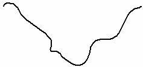
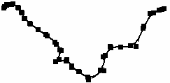
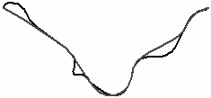
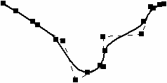
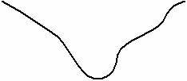

Simplify Curve dialog box
Applies a simplify tolerance to a selected curve and shows the original and current curve statistics.
- Tolerance
-
Specifies the tolerance you want to apply to the selected curve.
Note:Visualize tolerance as a tube. The original curve is at the center of a zero diameter tube. As the tube diameter (tolerance) increases, edit points are reduced as the curve shape is confined to the tube diameter. As the tolerance increases the curve is simplified.
Note:You can visually observe the curve simplification process as the tolerance increases using the right arrow in the dialog box.
- Simplify
-
Simplifies the curve based on tolerance displayed in the Tolerance box. You can use the arrows on either side of the Simplify button to increase or decrease the tolerance and simplify the curve.
- Status
-
Displays the status of the edit points, control points, and simplified tolerance for the curve.
- Original # of edit points
-
Displays the number of edit points for the original curve.
- Current # of edit points
-
Displays the number of edit points for the simplified curve.
- Original # of control vertices
-
Displays the number of control points for the original curve.
- Current # of control vertices
-
Displays the number of control points for the simplified curve.
- Simplified Tolerance
-
Displays the tolerance for the simplified curve.
The following is an example of a curve with a large number of edit points and control vertices. Simplify curve was used to reduce the number of points. The curve shape changed slightly. You can visually observe the curve changes as the tolerance increase.
 |
Original curve |
 |
Original curve in edit mode with 25 edit points and 27 control vertices |
 |
Dynamic display as curve simplify tolerance is increased |
 |
Resulting simplified curve reduced to 7 edit points and 9 control vertices |
 |
Simplified curve |
How do I
Draw a curveDisplay the control polygon for a curve
Insert or remove points on a curve
Simplify a curve
Convert analytic geometry to a b-spline curve
Draw a conic curve
Edit a conic curve
Look up more details
Curve commandCurve command bar
Curve Options dialog box
Conic command
Conic command bar
Simplify Curve command
Convert To Curve command